<!DOCTYPE lake>
<h1 data-lake-id="prHwa" id="prHwa"><span data-lake-id="u6ef65a1a" id="u6ef65a1a">Keil有官方版本和社区版本，此文档为</span><span data-lake-id="ue4783a0d" id="ue4783a0d" style="color: #DF2A3F">社区版本</span><span data-lake-id="u3be01cba" id="u3be01cba">安装，仅供参考。</span></h1><h1 data-lake-id="hdFM8" id="hdFM8"><span data-lake-id="u25b79241" id="u25b79241">1.keil MDK</span></h1><p data-lake-id="uea160181" id="uea160181"><span class="lake-fontsize-12" data-lake-id="u0d277675" id="u0d277675" style="color: rgb(51, 51, 51)">Keil是一家嵌入式系统开发工具提供商，其主要产品是Keil MDK（Microcontroller Development Kit），是一款集成开发环境（IDE），支持多种芯片架构，包括ARM、8051、C166等，可以进行代码编辑、编译、调试、仿真等工作。Keil MDK还提供了丰富的库函数和例程，帮助开发者快速开发嵌入式系统。除了Keil MDK外，Keil还提供了一些其他工具，如uVision、RealView等。Keil MDK在嵌入式系统开发中广泛应用。</span></p><h1 data-lake-id="w5vou" id="w5vou"><span data-lake-id="u001d07b4" id="u001d07b4" style="color: rgb(51, 51, 51)">2.keil社区版介绍</span></h1><p data-lake-id="u7d44ca38" id="u7d44ca38"><span class="lake-fontsize-12" data-lake-id="u49e3ec33" id="u49e3ec33" style="color: rgb(51, 51, 51)">在2022年初，Keil官方推出了MDK社区版（MDK-Community edition）</span></p><p data-lake-id="u367cad0e" id="u367cad0e"><strong><span class="lake-fontsize-12" data-lake-id="ud88d27d3" id="ud88d27d3" style="color: rgb(51, 51, 51)">特点</span></strong></p><ol list="u1271b5a0"><li data-lake-id="u3e04bbe2" fid="u46b771d6" id="u3e04bbe2"><span class="lake-fontsize-12" data-lake-id="u3f7c652f" id="u3f7c652f" style="color: rgb(51, 51, 51)">免费</span></li><li data-lake-id="uee89508d" fid="u46b771d6" id="uee89508d"><span class="lake-fontsize-12" data-lake-id="ud94e0c5d" id="ud94e0c5d" style="color: rgb(51, 51, 51)">没有代码大小限制</span></li><li data-lake-id="u3239b79a" fid="u46b771d6" id="u3239b79a"><span class="lake-fontsize-12" data-lake-id="u99cfd940" id="u99cfd940" style="color: rgb(51, 51, 51)">可供电子爱好者、学生、学者等群体非商业免费评估和使用</span></li><li data-lake-id="u79c96b66" fid="u46b771d6" id="u79c96b66"><span class="lake-fontsize-12" data-lake-id="u76d32b2a" id="u76d32b2a" style="color: rgb(51, 51, 51)">支持 Arm Compiler 6:可为所有基于 Arm Cortex-M 的产品提供精简的代码和强大的性能</span></li><li data-lake-id="ud29d8606" fid="u46b771d6" id="ud29d8606"><span class="lake-fontsize-12" data-lake-id="u621ed113" id="u621ed113" style="color: rgb(51, 51, 51)">可访问超过 9500 款支持基于 Cortex-M 处理器的微控制器器件</span></li><li data-lake-id="uee0ab8d2" fid="u46b771d6" id="uee0ab8d2"><span class="lake-fontsize-12" data-lake-id="uae71fadd" id="uae71fadd" style="color: rgb(51, 51, 51)">可用于基于 Arm 架构的微处理器的 CMSIS 标准框架</span></li></ol><h1 data-lake-id="Y1Xt4" id="Y1Xt4"><span data-lake-id="u1873dc29" id="u1873dc29" style="color: rgb(51, 51, 51)">3.keil下载</span></h1><p data-lake-id="u20245881" id="u20245881"><span class="lake-fontsize-12" data-lake-id="u86d13d7a" id="u86d13d7a" style="color: rgb(51, 51, 51)">keil社区版下载地址:</span><a data-lake-id="ua7997837" href="https://www.keil.arm.com/mdk-community/" id="ua7997837" rel="noopener noreferrer" target="_blank"><span data-lake-id="u5d584f1b" id="u5d584f1b">https://www.keil.arm.com/mdk-community/</span></a></p><p data-lake-id="u09fcd2ee" id="u09fcd2ee"><span data-lake-id="udd7228e4" id="udd7228e4">keil官方支持版下载地址：</span><a data-lake-id="ub5e13960" href="https://www.keil.com/download/product/" id="ub5e13960" rel="noopener noreferrer" target="_blank"><span data-lake-id="u0eec0f79" id="u0eec0f79">https://www.keil.com/download/product/</span></a></p><h2 data-lake-id="iDaKA" id="iDaKA"><span data-lake-id="u03c54340" id="u03c54340">(1)</span><span class="lake-fontsize-12" data-lake-id="u06d82876" id="u06d82876" style="color: rgb(51, 51, 51)">打开进入登录界面</span></h2><p data-lake-id="ud8c8b685" id="ud8c8b685">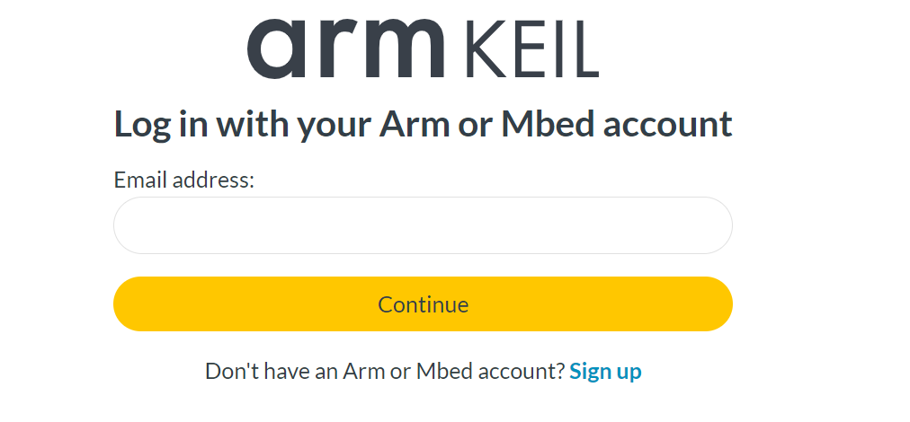</p><p data-lake-id="ueb372e15" id="ueb372e15"><span class="lake-fontsize-12" data-lake-id="u3c31a2e2" id="u3c31a2e2" style="color: rgb(51, 51, 51)">注册再登录即可</span></p><blockquote data-lake-id="ua2023d87" id="ua2023d87"><p data-lake-id="u9e087049" id="u9e087049"><span class="lake-fontsize-12" data-lake-id="ue67e1c2c" id="ue67e1c2c" style="color: rgb(119, 119, 119)">保留登录成功的界面,后面会过来赋值PSN码</span></p></blockquote><p data-lake-id="u26812927" id="u26812927">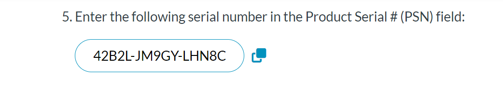</p><h2 data-lake-id="zpGyZ" id="zpGyZ"><span data-lake-id="ube48027a" id="ube48027a">(2)</span><span class="lake-fontsize-12" data-lake-id="u41fc5cdc" id="u41fc5cdc" style="color: rgb(51, 51, 51)">点击下载,跳转到信息页面</span></h2><p data-lake-id="u17f09f37" id="u17f09f37">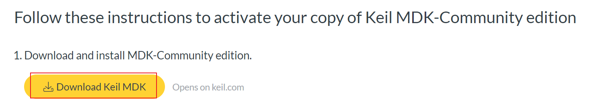</p><h2 data-lake-id="Vqdaj" id="Vqdaj"><span data-lake-id="u591b71ec" id="u591b71ec">(3)</span><span class="lake-fontsize-12" data-lake-id="u0957e8a8" id="u0957e8a8" style="color: rgb(51, 51, 51)">填写个人信息,点击提交</span></h2><p data-lake-id="uaf7403b2" id="uaf7403b2">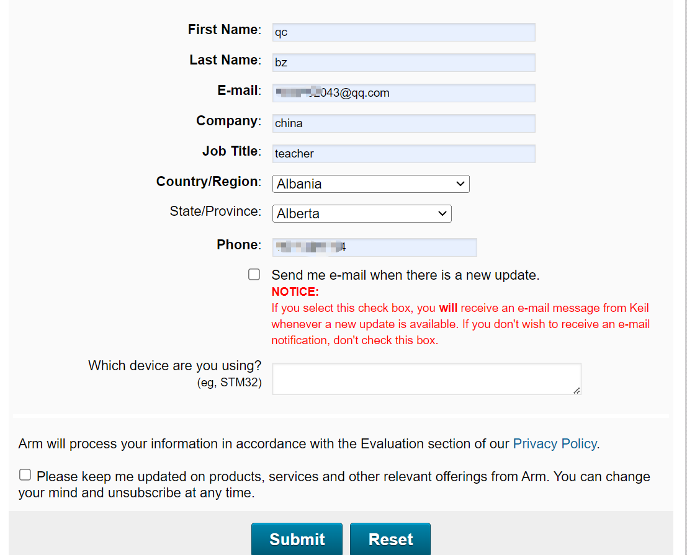</p><h2 data-lake-id="nS4yR" id="nS4yR"><span data-lake-id="u1f684264" id="u1f684264">(4)点击下载</span></h2><p data-lake-id="uf1fd6b77" id="uf1fd6b77">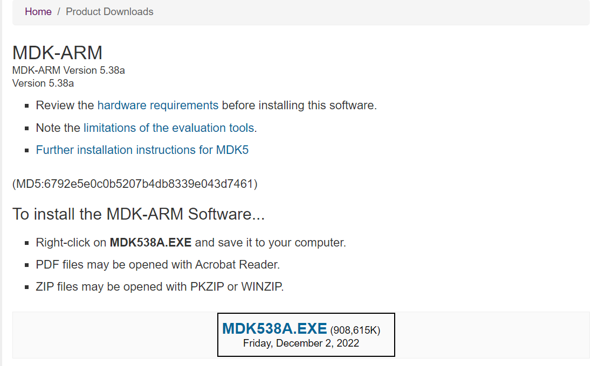</p><h1 data-lake-id="qvj5E" id="qvj5E"><span data-lake-id="ueab640ad" id="ueab640ad">4.keil安装</span></h1><h2 data-lake-id="w4oCW" id="w4oCW"><span data-lake-id="ufcf929e9" id="ufcf929e9">(1)</span><span class="lake-fontsize-12" data-lake-id="u3f068736" id="u3f068736" style="color: rgb(51, 51, 51)">点击安装包右键以管理员身份运行</span></h2><p data-lake-id="uab65802b" id="uab65802b">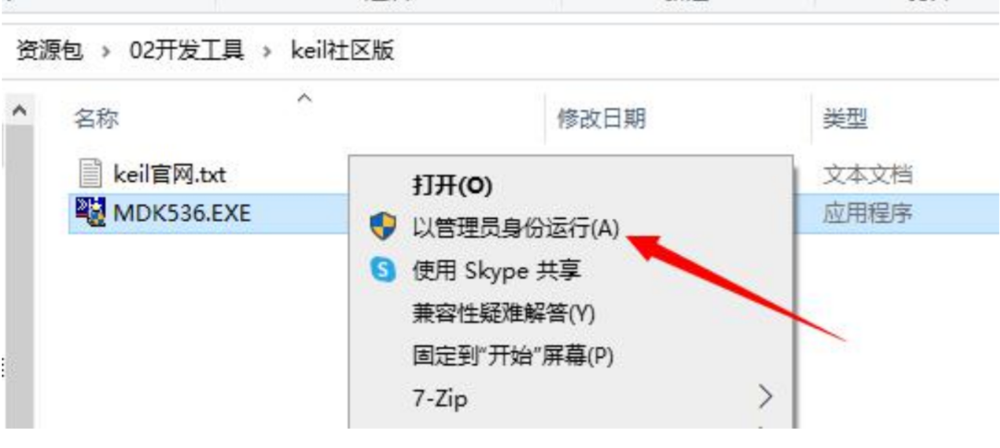</p><h2 data-lake-id="opmBk" id="opmBk"><span data-lake-id="u078757a5" id="u078757a5">(2)下一步开始安装</span></h2><p data-lake-id="ue15e352a" id="ue15e352a">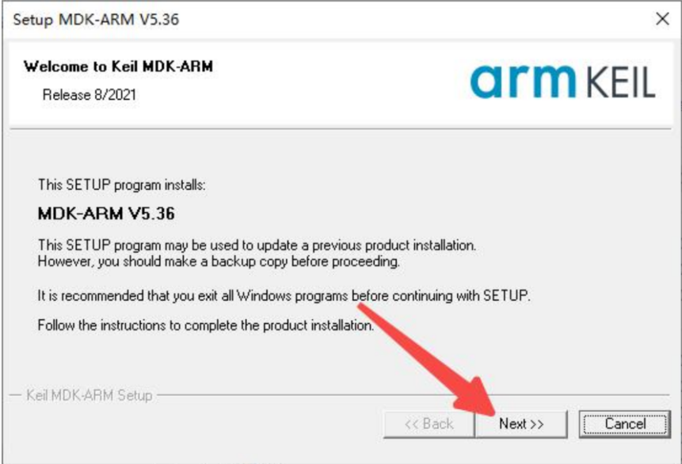</p><h2 data-lake-id="E0gla" id="E0gla"><span data-lake-id="u8b6e5e44" id="u8b6e5e44">(3)勾选同意条例继续</span></h2><p data-lake-id="u0a9aa7ee" id="u0a9aa7ee">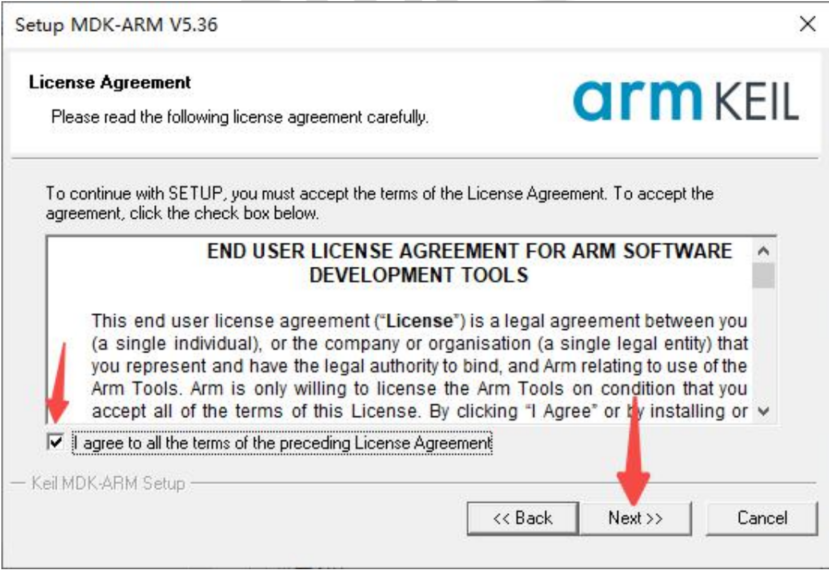</p><h2 data-lake-id="Ei3rW" id="Ei3rW"><span data-lake-id="ue90e1a3a" id="ue90e1a3a">(4)</span><span class="lake-fontsize-12" data-lake-id="u0c0f052d" id="u0c0f052d" style="color: rgb(51, 51, 51)">选择安装路径</span></h2><blockquote class="lake-alert lake-alert-warning" data-lake-id="u26cbe704" id="u26cbe704"><p data-lake-id="u6640925e" id="u6640925e"><span class="lake-fontsize-12" data-lake-id="u4ce5a4c9" id="u4ce5a4c9" style="color: rgb(51, 51, 51)">可以默认，也可以安装到 D 盘等其他目录，但是注意以下几点：</span></p></blockquote><ul list="u2b1c0fe6"><li data-lake-id="u1ba4850b" fid="ueecadae6" id="u1ba4850b"><span class="lake-fontsize-12" data-lake-id="ufc31257e" id="ufc31257e" style="color: rgb(51, 51, 51)">路径中一定</span><strong><span class="lake-fontsize-12" data-lake-id="u9d690094" id="u9d690094" style="color: #DF2A3F">不要</span></strong><span class="lake-fontsize-12" data-lake-id="uc5eb974d" id="uc5eb974d" style="color: rgb(51, 51, 51)">有中文或空格路径</span></li><li data-lake-id="ua9734dc0" fid="ueecadae6" id="ua9734dc0"><span class="lake-fontsize-12" data-lake-id="u43e1640e" id="u43e1640e" style="color: rgb(51, 51, 51)">Core路径要放到和C51相同的Keil路径（例如默认的</span><code data-lake-id="u9620d21b" id="u9620d21b"><span class="lake-fontsize-12" data-lake-id="u0136d94f" id="u0136d94f" style="color: rgb(51, 51, 51)">C:\Keil_v5</span></code><span class="lake-fontsize-12" data-lake-id="u31a039d7" id="u31a039d7" style="color: rgb(51, 51, 51)">）</span></li><li data-lake-id="u0c6db613" fid="ueecadae6" id="u0c6db613"><span class="lake-fontsize-12" data-lake-id="ub5aa634f" id="ub5aa634f">如果安装路径和C51不同，会导致C51项目</span><span class="lake-fontsize-12" data-lake-id="u291f322d" id="u291f322d" style="color: #DF2A3F">无法直接双击打开</span></li><li data-lake-id="u3bb587b2" fid="ueecadae6" id="u3bb587b2"><span class="lake-fontsize-12" data-lake-id="u28f696c4" id="u28f696c4" style="color: rgb(51, 51, 51)">Pack路径可以使用默认路径，也可以参考以下自定义路径结构</span></li><li data-lake-id="uff77ad11" fid="ueecadae6" id="uff77ad11"><span class="lake-fontsize-12" data-lake-id="u80f9a602" id="u80f9a602" style="color: rgb(51, 51, 51)">安装过程如提示有文件覆盖就点确认，进行覆盖</span></li></ul><p data-lake-id="ud71d6065" id="ud71d6065"><span class="lake-fontsize-12" data-lake-id="u69ae0e11" id="u69ae0e11">如果要使用自定义路径，推荐路径结构如下：</span></p><ul list="uf3b07410"><li data-lake-id="ueeac5764" fid="ud212147f" id="ueeac5764"><span class="lake-fontsize-12" data-lake-id="u4744dce0" id="u4744dce0">Core：</span><code data-lake-id="ub8b5ce15" id="ub8b5ce15"><span class="lake-fontsize-12" data-lake-id="uab989082" id="uab989082">D:\Keil_v5</span></code></li><li data-lake-id="u2d5eff40" fid="ud212147f" id="u2d5eff40"><span class="lake-fontsize-12" data-lake-id="u041caeb3" id="u041caeb3">Pack：</span><code data-lake-id="u1b2adb68" id="u1b2adb68"><span class="lake-fontsize-12" data-lake-id="u4b49b316" id="u4b49b316">D:\Keil_v5\ARM\Packs</span></code></li></ul><p data-lake-id="u32d57493" id="u32d57493">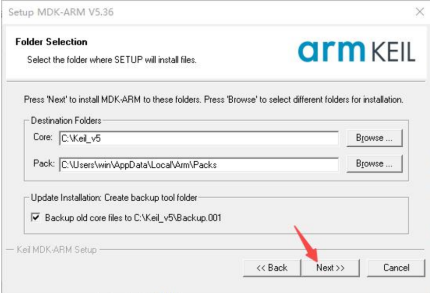</p><p data-lake-id="u4c895e73" id="u4c895e73"><span data-lake-id="u6d4946fd" id="u6d4946fd">如果选择目录和C51的不同，则以后双击C51项目会报如下错误：</span></p><p data-lake-id="u1c217cc8" id="u1c217cc8">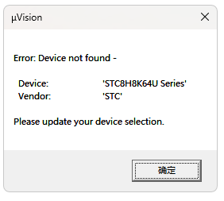</p><h2 data-lake-id="MWDmb" id="MWDmb"><span data-lake-id="uf7c3956c" id="uf7c3956c">(5)填写个人信息</span></h2><p data-lake-id="u46ca9de8" id="u46ca9de8">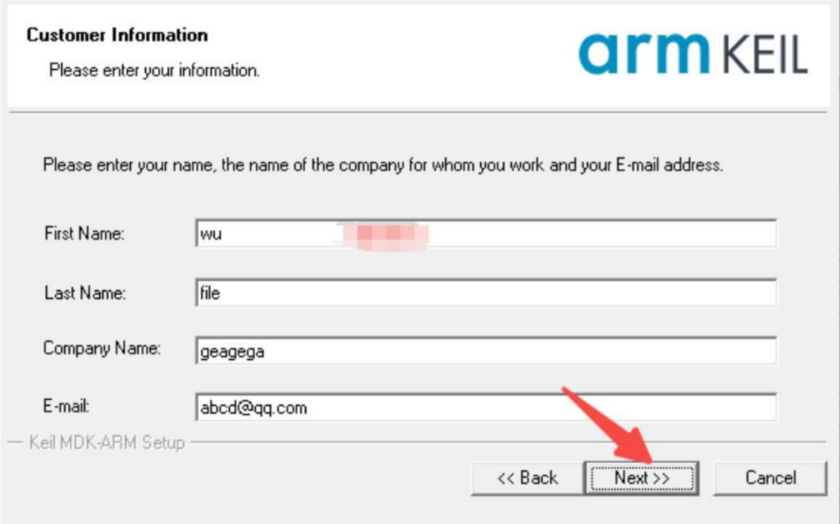</p><h2 data-lake-id="hrzxh" id="hrzxh"><span data-lake-id="uaa87d09b" id="uaa87d09b">(6)等待安装过程</span></h2><p data-lake-id="u66efeef1" id="u66efeef1">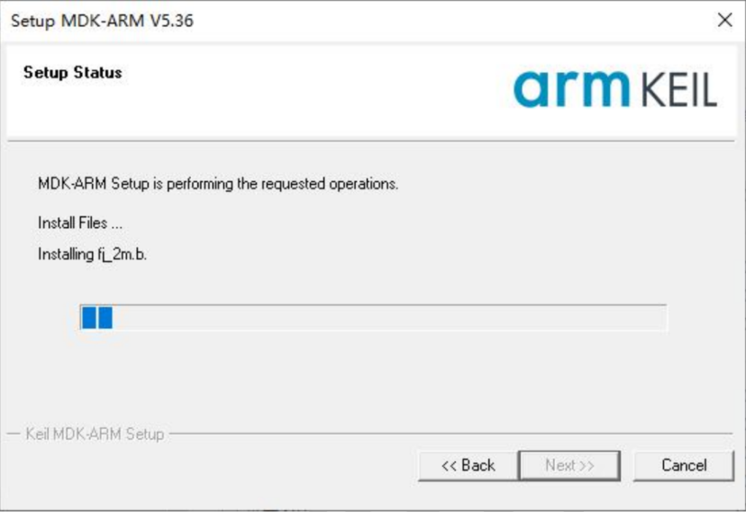</p><h2 data-lake-id="y5eUC" id="y5eUC"><span data-lake-id="u05797379" id="u05797379">(7)点击完成安装</span></h2><p data-lake-id="ue0a72ff8" id="ue0a72ff8"><span data-lake-id="u5419a8c5" id="u5419a8c5">这里取消勾选 </span><code data-lake-id="u74947fa6" id="u74947fa6"><span data-lake-id="u58b8aa72" id="u58b8aa72">Show Release Notes （显示发行记录）</span></code><span data-lake-id="u4eacacd0" id="u4eacacd0">，然后</span><code data-lake-id="u6841e3cf" id="u6841e3cf"><span data-lake-id="uf90f4f99" id="uf90f4f99">Finish</span></code></p><p data-lake-id="u3847f12d" id="u3847f12d">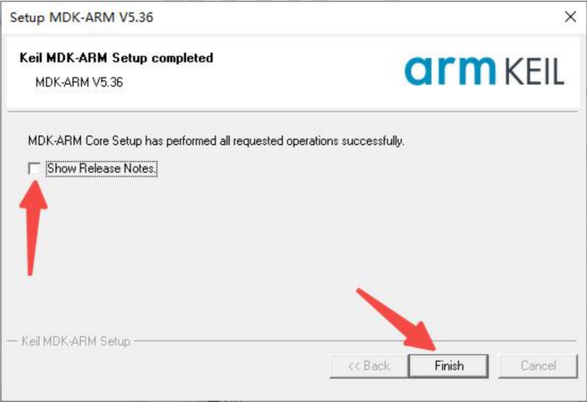</p><p data-lake-id="u2891d0eb" id="u2891d0eb"><span class="lake-fontsize-12" data-lake-id="ubef52c3e" id="ubef52c3e">完成之后</span><span class="lake-fontsize-12" data-lake-id="u6ece8047" id="u6ece8047" style="color: rgb(51, 51, 51)">会自动弹出下面这个界面，关闭这个窗口</span></p><p data-lake-id="ud408a89e" id="ud408a89e">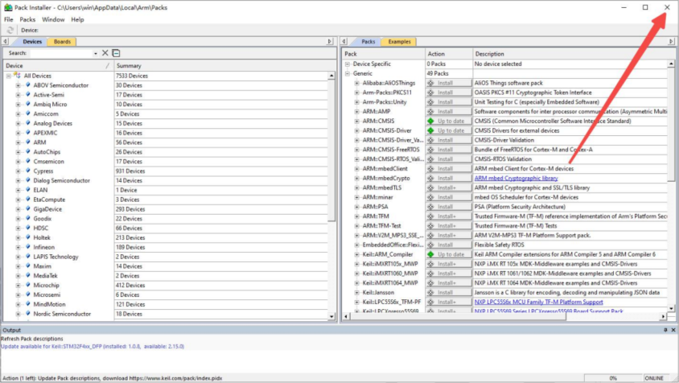</p><p data-lake-id="u70209921" id="u70209921"><span data-lake-id="u74a3962d" id="u74a3962d">安装好后，Keil根目录结构应当如下：</span></p><ul list="u2b0a1784"><li data-lake-id="u8bf0f4b6" fid="ua8f65aac" id="u8bf0f4b6"><span data-lake-id="u1b03f8e5" id="u1b03f8e5">包含</span><code data-lake-id="u1772c6f8" id="u1772c6f8"><span data-lake-id="ufdfbbad4" id="ufdfbbad4">ARM</span></code><span data-lake-id="u0e3d266a" id="u0e3d266a">目录</span></li><li data-lake-id="ua2a5a289" fid="ua8f65aac" id="ua2a5a289"><span data-lake-id="ud81c3455" id="ud81c3455">包含</span><code data-lake-id="ud69b75d6" id="ud69b75d6"><span data-lake-id="uf58e3d49" id="uf58e3d49">C51</span></code><span data-lake-id="udfb3624c" id="udfb3624c">目录</span></li><li data-lake-id="u579ff494" fid="ua8f65aac" id="u579ff494"><span data-lake-id="u2fe03724" id="u2fe03724">包含</span><code data-lake-id="uc314995b" id="uc314995b"><span data-lake-id="u17415745" id="u17415745">license_terms</span></code><span data-lake-id="ua37ab559" id="ua37ab559">目录</span></li><li data-lake-id="u59aa68e2" fid="ua8f65aac" id="u59aa68e2"><span data-lake-id="u66d89daf" id="u66d89daf">包含</span><code data-lake-id="ubffc27a7" id="ubffc27a7"><span data-lake-id="uac958f37" id="uac958f37">UV4</span></code><span data-lake-id="u4e0fceec" id="u4e0fceec">目录</span></li></ul><p data-lake-id="u08403444" id="u08403444">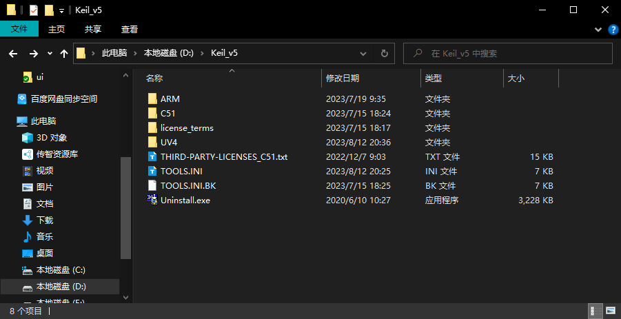</p><h1 data-lake-id="xqRIM" id="xqRIM"><span data-lake-id="u8fb958d9" id="u8fb958d9">5.keil激活</span></h1><blockquote class="lake-alert lake-alert-danger" data-lake-id="u8d8736b0" id="u8d8736b0"><p data-lake-id="u626164c5" id="u626164c5"><strong><span data-lake-id="u75645240" id="u75645240">注意：</span></strong></p><p data-lake-id="ufd4604c1" id="ufd4604c1"><span data-lake-id="u5f6568f4" id="u5f6568f4">以下步骤为官方推荐的个人体验版激活方式，免费，但是步骤较长。</span></p><p data-lake-id="ue9e3db77" id="ue9e3db77"><span data-lake-id="u20a0eaf3" id="u20a0eaf3">如果觉得麻烦，可上课认真听讲，1分钟内即可搞定。</span></p></blockquote><p data-lake-id="u4fd9aa3b" id="u4fd9aa3b"><span class="lake-fontsize-12" data-lake-id="u916f2b2f" id="u916f2b2f" style="color: rgb(51, 51, 51)">win10 开始位置找到 MDK 并</span><strong><span class="lake-fontsize-12" data-lake-id="ucaba46e3" id="ucaba46e3" style="color: #DF2A3F">以管理员方式运行</span></strong></p><p data-lake-id="u4785b19b" id="u4785b19b"><span class="lake-fontsize-12" data-lake-id="ua1f65bc8" id="ua1f65bc8" style="color: rgb(51, 51, 51)">点击 File 下的 License Management</span></p><p data-lake-id="u41f8accd" id="u41f8accd">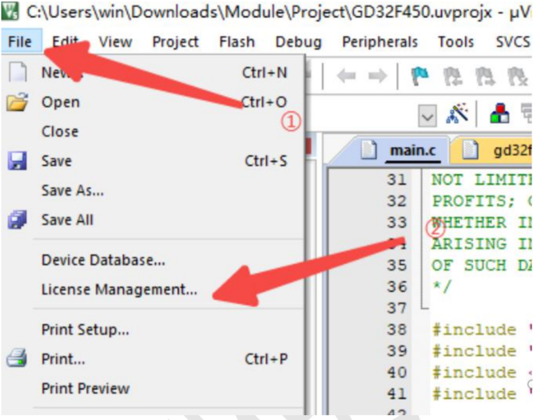</p><p data-lake-id="u5e7eb901" id="u5e7eb901"><span class="lake-fontsize-12" data-lake-id="u0a0000be" id="u0a0000be" style="color: rgb(51, 51, 51)">点击 Get LIC via Internet 按钮<br/></span>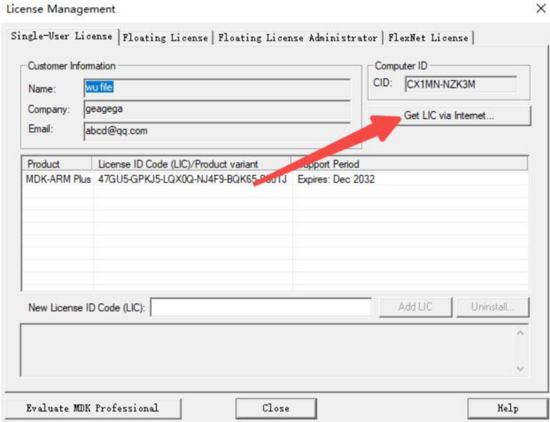</p><p data-lake-id="u6445a34f" id="u6445a34f"><span class="lake-fontsize-12" data-lake-id="u683e6522" id="u683e6522">点击确认</span></p><p data-lake-id="ue12febab" id="ue12febab">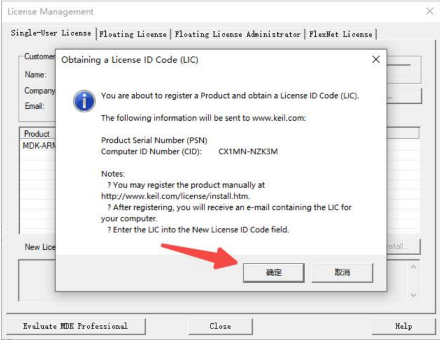</p><p data-lake-id="u346b9060" id="u346b9060"><span class="lake-fontsize-12" data-lake-id="u194e438b" id="u194e438b" style="color: rgb(51, 51, 51)">点击确定之后会弹出一个网页，然后填写一些自己的信息</span></p><p data-lake-id="uab851278" id="uab851278">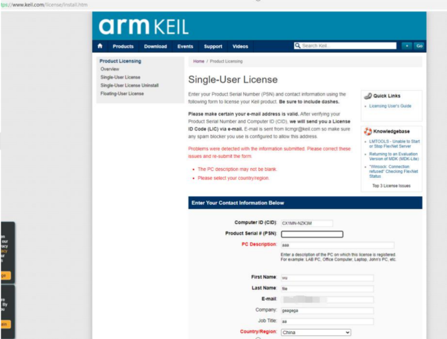</p><p data-lake-id="ub2ff4fd3" id="ub2ff4fd3"><span class="lake-fontsize-12" data-lake-id="udc92cf0c" id="udc92cf0c" style="color: rgb(51, 51, 51)">打开刚才下载的那个页面找到 PSN 序列号并复制</span></p><p data-lake-id="u8adc87de" id="u8adc87de">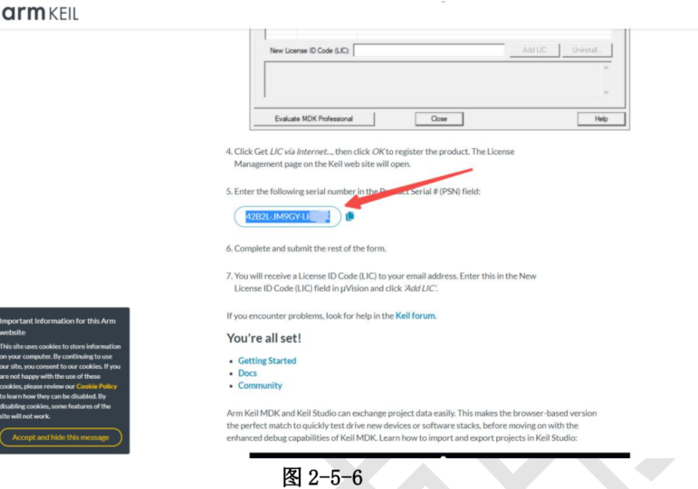</p><p data-lake-id="ueb4afe58" id="ueb4afe58"><span class="lake-fontsize-12" data-lake-id="u3abcb642" id="u3abcb642" style="color: rgb(51, 51, 51)">邮箱一定要正确因为会通过邮箱方式发送激活码</span></p><p data-lake-id="u20e9f22f" id="u20e9f22f">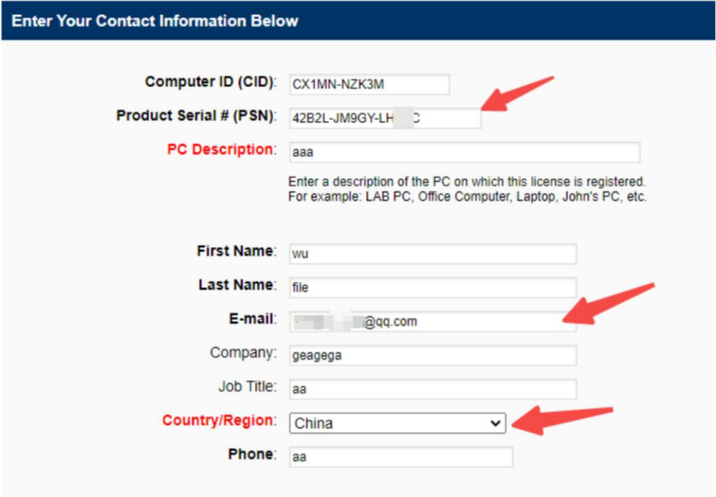</p><p data-lake-id="u5698dbb6" id="u5698dbb6"><span class="lake-fontsize-12" data-lake-id="ubfcb062b" id="ubfcb062b">然后拉到最下面，点击 Submit</span></p><p data-lake-id="uc8f96117" id="uc8f96117">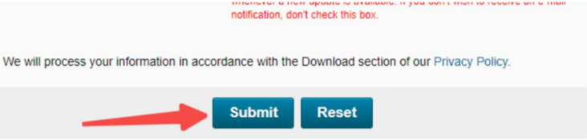</p><blockquote data-lake-id="ud4fade19" id="ud4fade19"><p data-lake-id="ua378cb9f" id="ua378cb9f"><span class="lake-fontsize-12" data-lake-id="u5ae784b2" id="u5ae784b2">这个时候会把激活码发送到你的邮箱</span></p></blockquote><p data-lake-id="ue932592e" id="ue932592e"><span class="lake-fontsize-12" data-lake-id="u857b3599" id="u857b3599">复制邮箱中收到的激活码</span></p><p data-lake-id="u436ee512" id="u436ee512">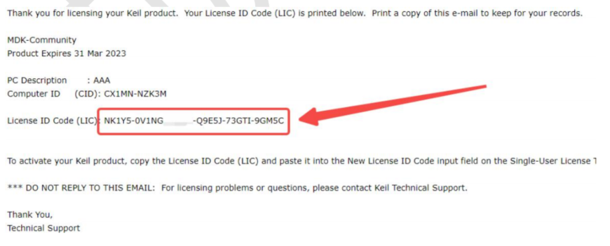</p><p data-lake-id="u214a30e9" id="u214a30e9"><span class="lake-fontsize-12" data-lake-id="u42013715" id="u42013715" style="color: rgb(51, 51, 51)">将复制的 License 粘贴到 Keil 里面的 New License ID Code（LIC）下，然后点击 Add LIC</span></p><p data-lake-id="u6ff30fbc" id="u6ff30fbc">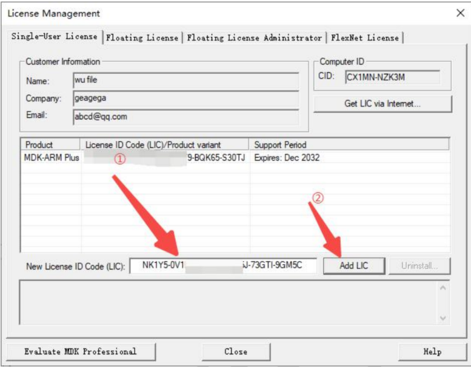</p><p data-lake-id="uc5dfd81f" id="uc5dfd81f"><span class="lake-fontsize-12" data-lake-id="u4e45d007" id="u4e45d007" style="color: rgb(51, 51, 51)">激活之后如果出现日期就是激活成功。</span></p><blockquote data-lake-id="u78829478" id="u78829478"><p data-lake-id="ua32d9f15" id="ua32d9f15"><span class="lake-fontsize-12" data-lake-id="u4995ad2e" id="u4995ad2e" style="color: rgb(51, 51, 51)">如果出现下面问题，关闭重新使用管理员模式运行一下</span></p></blockquote><p data-lake-id="u8bf08353" id="u8bf08353">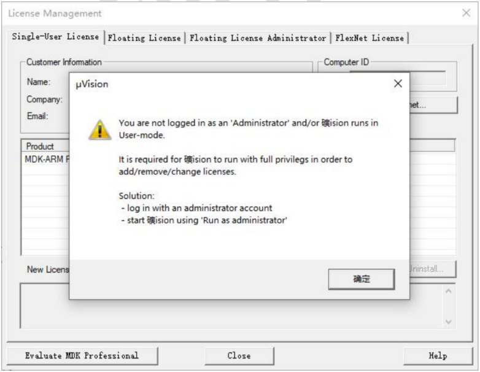</p><h1 data-lake-id="qCzW6" id="qCzW6"><span data-lake-id="u76cada66" id="u76cada66">6.keil添加arm compiler5</span></h1><ol list="uca368c63"><li data-lake-id="ub99814a9" fid="u32042e8b" id="ub99814a9"><span data-lake-id="u1d6497fb" id="u1d6497fb">下载arm compiler支持包</span></li></ol><p data-lake-id="uea12694b" id="uea12694b" style="text-indent: 2em"><a class="yuque-card-link" href="../../_assets/dfbc0331fd9fd5abd91da3bf.zip">ARMCC.zip</a></p><blockquote data-lake-id="udcf5e64e" id="udcf5e64e" style="padding-left: 2em"><p data-lake-id="u60fe5933" id="u60fe5933"><span data-lake-id="ud79363cd" id="ud79363cd">来源：</span><a data-lake-id="u4a4d1330" href="https://developer.arm.com/documentation/ka005198/latest/" id="u4a4d1330" rel="noopener noreferrer" target="_blank"><span data-lake-id="u2470d0fa" id="u2470d0fa">https://developer.arm.com/documentation/ka005198/latest/</span></a></p><p data-lake-id="u5cd1450c" id="u5cd1450c"><span data-lake-id="u16172bd9" id="u16172bd9">搜索：</span><a data-lake-id="ub48a4b65" href="https://developer.arm.com/downloads/view/ACOMP5?revision=r5p6-07rel1" id="ub48a4b65" rel="noopener noreferrer" target="_blank"><span data-lake-id="u2b93b4dd" id="u2b93b4dd" style="color: rgb(255, 107, 0) !important">Arm Compiler 5.06 update 7 (build 960)</span></a></p></blockquote><ol list="u95085aaa" start="2"><li data-lake-id="u9a609a0d" fid="u60fbdfb7" id="u9a609a0d"><span data-lake-id="u5e431895" id="u5e431895">将</span><code data-lake-id="u234720fc" id="u234720fc"><span data-lake-id="ua4152fe4" id="ua4152fe4">ARMCC.zip</span></code><span data-lake-id="ue3dd3863" id="ue3dd3863">解压到keil安装目录下的ARM目录下</span></li></ol><p data-lake-id="ua9931b84" id="ua9931b84" style="text-indent: 2em">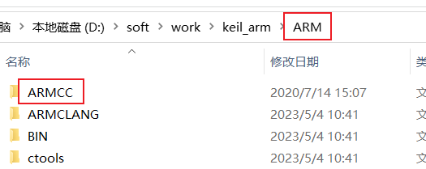</p><ol list="uf7e95488" start="3"><li data-lake-id="u1b971db9" fid="u829c3c9d" id="u1b971db9"><span data-lake-id="u61f2d7ff" id="u61f2d7ff">在keil中添加编译器</span></li></ol><p data-lake-id="u0c981028" id="u0c981028" style="text-indent: 2em">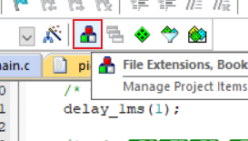</p><ol list="u390f5724" start="4"><li data-lake-id="ubda40d0b" fid="ub86f9224" id="ubda40d0b"><span data-lake-id="u3145f021" id="u3145f021">添加ARM Compiler</span></li></ol><p data-lake-id="u7db0a934" id="u7db0a934" style="text-indent: 2em">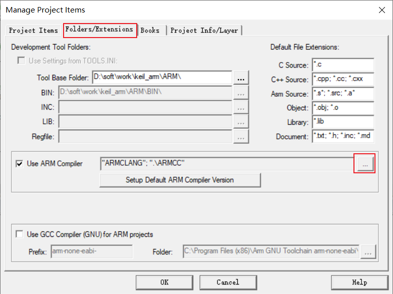</p><ol list="ufb043a73" start="5"><li data-lake-id="u01202611" fid="u45cc8e52" id="u01202611"><span data-lake-id="uf0ff0c28" id="uf0ff0c28">点击添加</span></li></ol><p data-lake-id="u070c063e" id="u070c063e" style="text-indent: 2em">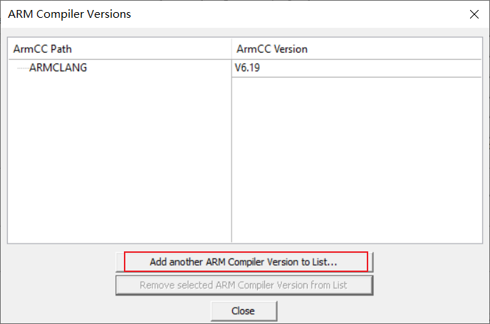</p><ol list="ue953d8e3" start="6"><li data-lake-id="u94038c77" fid="u741e1fa0" id="u94038c77"><span data-lake-id="u52cf199d" id="u52cf199d">选择刚才解压的目录</span></li></ol><p data-lake-id="ua8c25e70" id="ua8c25e70" style="text-indent: 2em">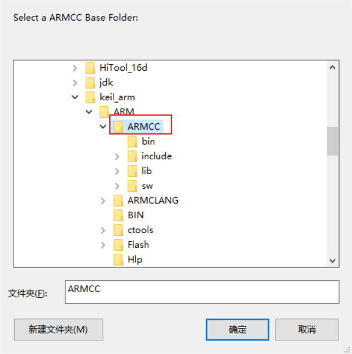</p><ol list="ua7bffeb0" start="7"><li data-lake-id="ua3996383" fid="u4daa6e85" id="ua3996383"><span data-lake-id="ucf87104e" id="ucf87104e">添加完成之后</span></li></ol><p data-lake-id="u761b59d0" id="u761b59d0" style="text-indent: 2em">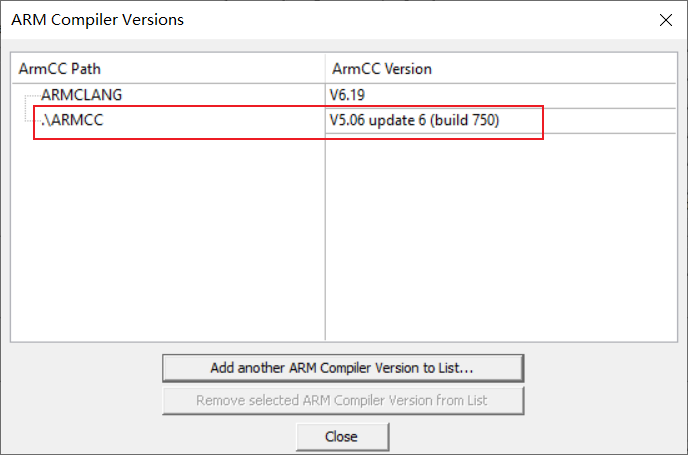</p><ol list="u2ee099e4" start="7"><li data-lake-id="u12ee993f" fid="u9d0472fc" id="u12ee993f"><span data-lake-id="u1975e5de" id="u1975e5de">安装完重启可以切换compiler5</span></li></ol><p data-lake-id="ua84bfcf1" id="ua84bfcf1" style="text-indent: 2em">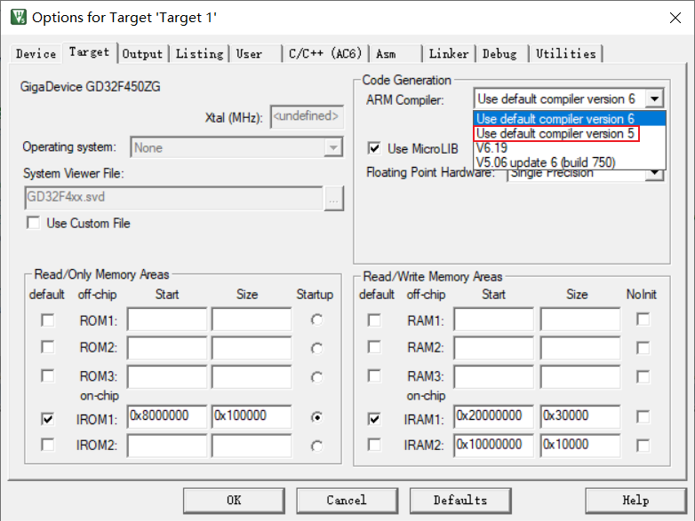</p><p data-lake-id="uab215b27" id="uab215b27"><br/></p><h1 data-lake-id="finMg" id="finMg"><span class="lake-fontsize-12" data-lake-id="uc532056f" id="uc532056f">注意事项:</span></h1><ol list="uf7699055"><li data-lake-id="u29902041" fid="u1577cf84" id="u29902041"><span class="lake-fontsize-12" data-lake-id="uacb17de2" id="uacb17de2">安装目录不能有中文</span></li><li data-lake-id="u0f4f0560" fid="u1577cf84" id="u0f4f0560"><span class="lake-fontsize-12" data-lake-id="ufbdf1e4e" id="ufbdf1e4e">运行keil的时候用管理员模式运行</span></li></ol>